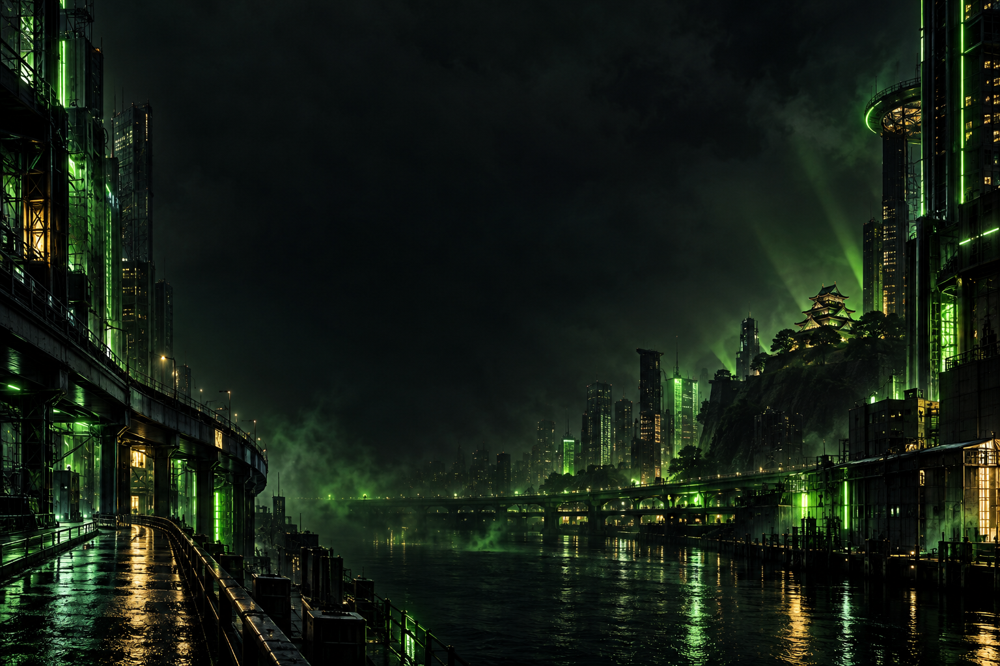

MEMBER / 01OSG CREW



KICKやふわっちで活動する
SEIZ、トーマス、うわさのうどんが結成した
配信者グループ、Z界 OSG。
OSGは「大阪政治グループ」の略。
いつもの配信から、3人でつくる時間へ。
次の一幕を、一緒に。
それぞれの配信へ。


UWASA NO UDON
KICK「UDONCHANNEL」で雑談を配信。ふわっちでは「udonchannel」「king_of_udon」の2アカウントで活動中。
それぞれの場所で、今日も。
各プラットフォームへはこちらから。